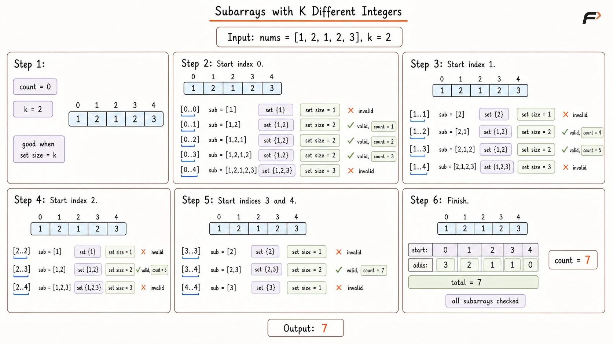
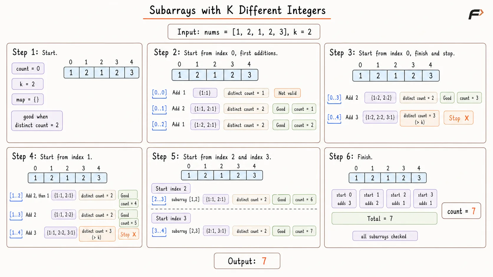
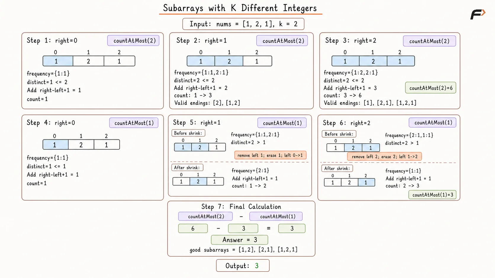

Count Subarrays with Exactly K Different Integers
Given an integer array nums and an integer k, return the number of good subarrays.
A good subarray is a continuous subarray that contains exactly k different integers.
A subarray is a continuous part of the array.
Example 1
Input: nums = [1, 2, 1, 2, 3], k = 2
Output: 7
Explanation: The good subarrays are [1, 2], [1, 2, 1], [1, 2, 1, 2], [2, 1], [2, 1, 2], [1, 2], and [2, 3].
Example 2
Input: nums = [1, 2, 1, 3, 4], k = 3
Output: 3
Explanation: The good subarrays are [1, 2, 1, 3], [2, 1, 3], and [1, 3, 4].
Brute Force Approach
Every possible subarray can be checked independently. For each selected range, use a set to count how many distinct values it contains.
If the set size equals k, that range is a good subarray. This guarantees that every possible answer is examined, but overlapping subarrays repeatedly process the same elements.
Algorithm
The size of the array is stored in n. If n is 0 or k is less than or equal to 0, 0 is returned because no non-empty good subarray can be formed in such cases.
A helper function is created to count distinct integers inside a subarray from start to end. A set is used inside this helper because a set stores only unique values.
The helper function traverses the subarray from start to end and inserts each element into the set. After the traversal ends, the size of the set gives the number of distinct integers in that subarray.
A variable count is initialized with 0. This stores the total number of good subarrays found so far.
Two loops are used to generate every possible subarray. The first loop chooses the starting index start, and the second loop chooses the ending index end.
For every subarray from start to end, the helper function is called. If the distinct count is exactly equal to k, count is increased by 1. After all subarrays are checked, count is returned.
Dry Run

Subarrays with K Different Integers Brute Force Dry Run .png
Solution
#include <bits/stdc++.h>
using namespace std;
class Solution {
private:
// Counts distinct values
// inside the selected range.
int countDistinct(
const vector<int>& nums,
int start,
int end
) {
unordered_set<int> distinct;
// Scan the selected subarray.
for (int i = start; i <= end; i++) {
distinct.insert(nums[i]);
}
return distinct.size();
}
public:
// Counts subarrays containing
// exactly k distinct integers.
int subarraysWithKDistinct(
vector<int>& nums,
int k
) {
int n = nums.size();
// No valid non-empty subarray
// can exist in these cases.
if (n == 0 || k <= 0) {
return 0;
}
int count = 0;
// Try every possible start.
for (int start = 0; start < n; start++) {
// Try every possible end
// for the current start.
for (int end = start; end < n; end++) {
int distinctCount = countDistinct(
nums,
start,
end
);
// Count ranges having
// exactly k distinct values.
if (distinctCount == k) {
count++;
}
}
}
return count;
}
};
int main() {
vector<int> nums = {1, 2, 1, 2, 3};
int k = 2;
Solution solution;
cout << solution.subarraysWithKDistinct(
nums,
k
) << endl;
return 0;
}Complexity Analysis
Time Complexity: O(N³), where N is the size of the array. There are O(N²) possible subarrays, and counting distinct integers in each subarray can take O(N) time.
Space Complexity: O(N), because the set used inside the helper function may store distinct integers from the current subarray.
Better Approach
Instead of rebuilding the distinct set for every range, fix start and expand end while maintaining a frequency map.
The map size directly gives the number of distinct integers. Once it becomes greater than k, further expansion from the same start cannot make it valid again because adding elements cannot reduce the distinct count.
Algorithm
The size of the array is stored in n. If n is 0 or k is less than or equal to 0, 0 is returned because no good subarray can exist.
A variable count is initialized with 0. This stores the number of subarrays containing exactly k distinct integers.
The array is traversed using start as the starting index. For every start, a fresh frequency map is created because a new subarray is being built from that position.
The end pointer moves from start to the end of the array. Whenever nums[end] is included in the current subarray, its frequency is increased in the map.
The size of the map tells how many distinct integers are currently present in the subarray. If the map size becomes exactly k, count is increased.
If the map size becomes greater than k, the loop stops for the current start. This is safe because adding more elements cannot decrease the number of distinct integers. After all starting positions are checked, count is returned.
Dry Run

Subarrays with K Different Integers Better Approach Dry Run.png
Solution
#include <bits/stdc++.h>
using namespace std;
class Solution {
public:
// Expands from every start
// while tracking frequencies.
int subarraysWithKDistinct(
vector<int>& nums,
int k
) {
int n = nums.size();
// No valid non-empty subarray
// can exist in these cases.
if (n == 0 || k <= 0) {
return 0;
}
int count = 0;
// Try every possible start.
for (int start = 0; start < n; start++) {
unordered_map<int, int> frequency;
// Expand the current subarray.
for (int end = start; end < n; end++) {
frequency[nums[end]]++;
// Count the range when it
// has exactly k distinct values.
if (frequency.size() == k) {
count++;
}
// Further expansion cannot
// reduce the distinct count.
if (frequency.size() > k) {
break;
}
}
}
return count;
}
};
int main() {
vector<int> nums = {1, 2, 1, 2, 3};
int k = 2;
Solution solution;
cout << solution.subarraysWithKDistinct(
nums,
k
) << endl;
return 0;
}Complexity Analysis
Time Complexity: O(N²), where N is the size of the array. For every starting index, the ending index may move toward the right until the distinct count becomes greater than k.
Space Complexity: O(N), because the frequency map may store distinct values from the current subarray.
Optimal Approach
Counting exactly k distinct values directly is inconvenient because several starting positions may form valid subarrays for the same ending position.
Instead, count subarrays with at most k distinct integers and subtract those with at most k - 1 distinct integers. Their difference leaves exactly the subarrays containing k distinct values.
A sliding window efficiently finds the valid left boundary for each right, while a frequency map ensures a value is removed from the distinct count only after its last occurrence leaves the window.
Algorithm
A helper function countAtMost is created to count subarrays with at most limit distinct integers. If limit is less than or equal to 0, 0 is returned because no non-empty useful subarray can have at most 0 distinct integers.
Inside the helper function, a frequency map is used to store how many times each integer appears in the current window. This is needed because an integer should be removed from the distinct count only when its frequency becomes 0.
Two variables are initialized: left is set to 0 to represent the left boundary of the window, and count is set to 0 to store the number of valid subarrays.
The right pointer moves from 0 to n - 1. At every step, nums[right] is added to the frequency map because it becomes part of the current window.
If the size of the frequency map becomes greater than limit, the window is shrunk from the left. While shrinking, the frequency of nums[left] is decreased. If its frequency becomes 0, that integer is removed from the map. Then left is moved one step forward.
Once the window contains at most limit distinct integers, every subarray ending at right and starting from any index between left and right is valid. Therefore, right - left + 1 is added to count. Finally, the answer is returned as countAtMost(k) - countAtMost(k - 1).
Dry Run

Subarrays with K Different Integers Optimal Appraoch Dry Run.png
Solution
#include <bits/stdc++.h>
using namespace std;
class Solution {
private:
// Counts subarrays having
// at most limit distinct values.
int countAtMost(
vector<int>& nums,
int limit
) {
// No non-empty subarray
// can satisfy this limit.
if (limit <= 0) {
return 0;
}
unordered_map<int, int> frequency;
int left = 0;
int count = 0;
// Expand the window with right.
for (int right = 0; right < nums.size(); right++) {
frequency[nums[right]]++;
// Shrink until the window
// has at most limit values.
while (frequency.size() > limit) {
int value = nums[left];
frequency[value]--;
// Remove the value only
// after its last copy leaves.
if (frequency[value] == 0) {
frequency.erase(value);
}
left++;
}
// Every start from left to right
// forms a valid subarray.
count += right - left + 1;
}
return count;
}
public:
// Counts subarrays containing
// exactly k distinct integers.
int subarraysWithKDistinct(
vector<int>& nums,
int k
) {
// Exactly k distinct values
// require a positive k.
if (k <= 0) {
return 0;
}
return countAtMost(nums, k)
- countAtMost(nums, k - 1);
}
};
int main() {
vector<int> nums = {1, 2, 1, 2, 3};
int k = 2;
Solution solution;
cout << solution.subarraysWithKDistinct(
nums,
k
) << endl;
return 0;
}Complexity Analysis
Time Complexity: O(N), where N is the size of the array. The helper function countAtMost runs in O(N), and it is called twice. So, the overall time complexity is O(2N), which simplifies to O(N).
Space Complexity: O(N), because the frequency map may store distinct values from the current window.
FAQs
Q1. Why is this problem converted into atMost(k) - atMost(k - 1)?
Subarrays with at most k distinct integers include subarrays with 1 to k distinct integers. After removing subarrays with at most k - 1 distinct integers, only subarrays with exactly k distinct integers remain.
Q2. Why is a frequency map used?
A frequency map is used because the same integer can appear multiple times in the current window. It helps remove an integer from the distinct count only when its frequency becomes 0.
Q3. Why is right - left + 1 added in the optimal approach?
Once the window from left to right has at most limit distinct integers, every subarray ending at right and starting from any index between left and right is also valid.
Q4. Why can the better approach stop when distinct count becomes greater than k?
For a fixed starting index, extending the subarray can only keep or increase the number of distinct integers. So once it becomes greater than k, that start index cannot produce more valid subarrays.
Q5. What happens if k is 0?
No non-empty subarray can contain exactly 0 distinct integers, so the answer is 0.
Q6. Is there another optimal sliding window method?
Yes. A two-window method can also be used to count exactly k distinct integers directly, but the atMost(k) - atMost(k - 1) method is simpler, cleaner, and widely used.